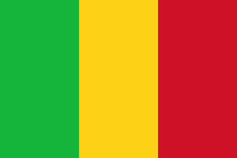

Mali, known for its rich history as the Malian Empire and for Mansa Musa, the wealthiest man to have ever lived, boasts numerous achievements and innovations throughout its history. Before I continue, I'd like to share some historical facts that contributed to the downfall of the Malian Empire.
Prior to European colonization, Mali, like most countries at the time, thrived and wielded significant power. Abundant natural resources made our country not only naturally rich but also a hub of wealth. The empire prospered under the leadership of strong figures such as Mansa Musa and Sundiata Keita. It wasn't until the forceful and cruel European colonization that the empire began to decline. To this day, Mali and other West African countries still grapple with the consequences of colonization. However, under the leadership of our current president, Assimi Goïta, Mali has been growing stronger than ever and advancing in many aspects, as I will discuss further.Mali has officially replaced French as our official language with Bambara.

Great Mosque of Djenne: Mali is home to the Great Mosque of Djenne, the largest mud brick building in the world. Timbuktu: Timbuktu, a city in Mali, was historically a major center for trade, scholarship, and Islamic culture during the Mali Empire. It played a crucial role in the spread of Islam in Africa. Malian Empires: Mali was once home to several prominent empires, including the Ghana Empire, the Mali Empire, and the Songhai Empire. These empires were influential in trans-Saharan trade and Islamic scholarship. Salt and Gold Trade: Mali was a central player in the trans-Saharan trade routes, particularly known for the exchange of gold and salt. The wealth from this trade contributed to the prosperity of the Mali Empire.
.jpeg)